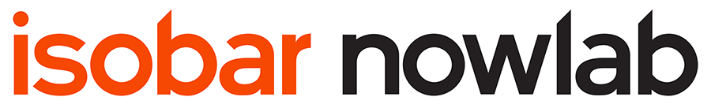

2016.01.27
株式会社電通iXとアイソバー・ジャパン株式会社の2社は2016年1月1日付で合併し、社名を「電通アイソバー株式会社」に改称いたしました。
2社合併による規模の拡大とデジタル専門力の統合により、国内外の顧客企業に対し国内市場・海外市場を問わず、フルサービスのエクスペリエンス・デザインやブランド・コマースなど、付加価値の高いデジタルソリューションを提供してまいります。
今回はアイソバーグローバルのCEOであるJean Lin来日に伴い、セミナーを開催させて頂きます。ぜひご参加ください。
[日時]2016年2月24日（水） 15:30～18:30終了予定 （15:00受付開始）
[会場]築地松竹ビル5階 大会議室 （東京都中央区築地1-13-1）
[参加費]無料（事前登録制）
[定員]150人
[主催]電通アイソバー株式会社
[協力]株式会社宣伝会議
電通アイソバー株式会社 代表取締役社長 得丸英俊
Ideas Without Limits ※同時通訳
Jean Lin
Isobar グローバル CEO
本セッションでは、テクノロジーの進化によって実現されたボーダレスなアイディアが、ブランドとビジネスにどう変革を起こすか、ご紹介いたします。
Jean Lin プロフィール
中国・台湾でwwwins Isobar を立ち上げ、前職Asia-Pacific CEOでは、
アジア太平洋の事業拡大をリードしてきた。現在、グローバルCEOとして、
40ヶ国40の70以上拠点を通して、4,000人を超えるデジタルマーケティング人材を牽引。
ボーダレスなアイディアとイノベーションを提供し、企業を変革に導くリーダーとして評価されている。
2009 年、Advertising Ageにより「30 Women to Watch 」の1 人に選ばれ、
2010 年にはCampaign Asia-Pacific誌により、アジア太平洋地域の最優秀女性人材にランクイン。
最近では同誌で同地域のTop5 CEO に選出される。IT業界関連のイベントでは頻繁に
スピーカーとして登壇し、また、2015年Cannes Lions Cyberの審査員を務めた。
LINEのグローバル戦略と「Lineビジネスコネクト」がビジネスに与えるインパクト（仮）
田端信太郎氏
LINE株式会社 上級執行役員
LINEのグローバル展開における戦略と、One to Oneマーケティングを実現するLINEビジネスコネクトのソリューションをご紹介する予定です。
田端信太郎氏 プロフィール
NTTデータを経てリクルートへ。フリーマガジン「R25」を立ち上げ、R25創刊後は広告営業の責任者を務める。その後、ライブドアに入社し、livedoorニュースを統括。ライブドア事件後には執行役員メディア事業部長に就任し経営再生をリード。さらに新規メディアとして、BLOGOSなどを立ち上げる。
2010年春からコンデナスト・デジタルへ。VOGUE、GQ JAPAN、WIREDなどのWebサイトとデジタルマガジンの収益化を推進。2012年6月 NHN Japan株式会社 執行役員広告事業グループ長に就任。2014年4月から現職。
LINEなどの広告営業および、LINEビジネスコネクトによるCRM展開など法人ビジネス全般を統括。
パネルディスカッション
◯ パネリスト
スリーエム ジャパン株式会社
eコマース プロジェクト部
eコマース マーケティング部 部長
田中 訓氏
パナソニック株式会社
ブランドコミュニケーション本部
グローバルコミュニケーション部
デジタルコンテンツ課 課長
次田 寿生氏
電通アイソバー株式会社
代表取締役社長
得丸 英俊
◯ モデレーター
株式会社宣伝会議
取締役副社長 兼 編集室長
田中 里沙
セミナー終了後、ご歓談の時間を設けております。
また、nowlabの展示・紹介もする予定です。是非ご参加ください。

※プログラムの内容、スケジュール、講演者はやむをえない事情で予告なく変更する場合がございます。
※参加希望者多数の場合は抽選とさせていただきます。
お申込みの受付は終了いたしました。
ご応募ありがとうございました。
お問い合わせ先：
電通アイソバーセミナー事務局
seminar@dentsuisobar.com 電話番号：03-5551-1674